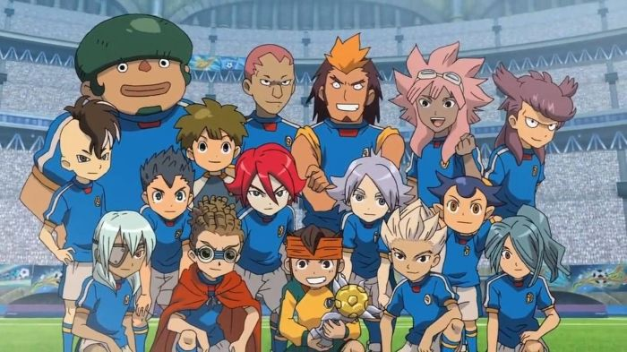
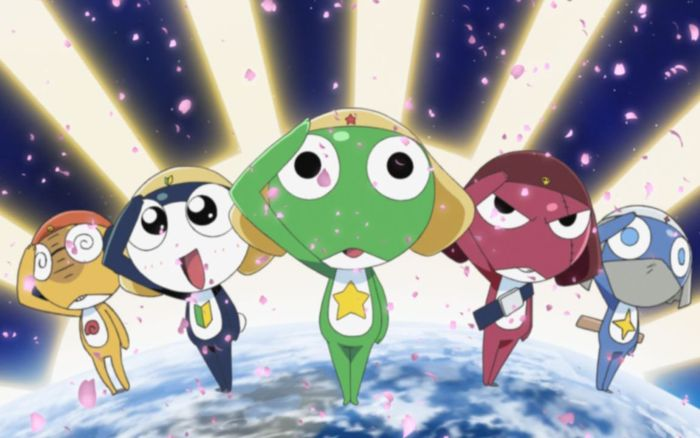
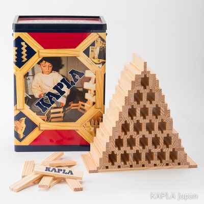

印象に残ったもの TOP3
今見返してもワクワクする、個人的ベスト作品・コンテンツのランキング詳細です。
第1位：イナズマイレブン

超次元サッカーの熱い展開と魅力的な技の数々。仲間との絆や挫折を乗り越えるストーリーは今見ても胸が熱くなります。 アトミックフレアと皇帝ペンギン2号を習得したいです。
第2位：ケロロ軍曹

地球（ペコポン）侵略にやってきたカエル型の宇宙人「ケロロ軍曹」が、ひょんなことから地球人の子供たちと同居し、侵略を忘れガンプラ作りに没頭する日常と騒動が描かれたコメディ作品です。 曲が印象的でした。クスッと笑うときに見るのがおすすめ
第3位：カプラ

無心でするひとり遊びに適しています。「できるだけ高く積み上げて壊す」の「壊す」の部分が醍醐味です。また忘れたころにやりたいですね。